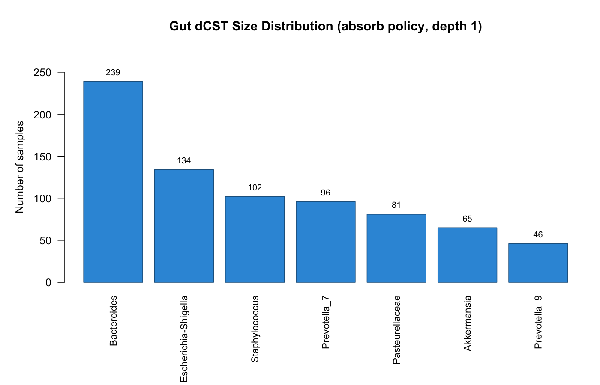

linf is a lightweight R package for analysing compositional data through L-infinity (L∞) normalization and Dominant Community State Types (dCSTs).
Classical centered log-ratio (CLR) and isometric log-ratio (ILR) coordinates are defined only for strictly positive compositions. Zero-containing observations lie on the boundary of the simplex and must first undergo pseudocount addition or zero replacement, which represents them as interior compositions. This is questionable when zeros represent true absence, especially when every sample contains structural zeros, as is common in microbiome feature tables: replacement then represents every sample as containing every feature in the analysed feature set. For vaginal 16S rRNA or metagenomic data, this would imply that every vaginal microbial community contains every phylotype included in the analysis, a biologically implausible assumption. L∞ normalization retains zeros: dividing each sample by its maximum places the observation on the boundary of the unit L∞ ball. The dominant feature — the one that achieves the maximum — defines a natural, parameter-free partition of samples into dominance sample sets.
dCST construction is rank based. Depth-1 dCSTs partition samples by the rank-1 (most abundant) feature. Deeper dCSTs iteratively refine each retained dominance-lineage using the next-ranked feature. The support threshold n₀ sets the minimum sample count required to retain a dominance sample set.
Installation
# From GitHub (development version)
# install.packages("devtools")
devtools::install_github("pgajer/linf", build_vignettes = TRUE)or
# From CRAN
install.packages("linf")Features
-
L∞ normalization —
normalize.linf(): row-wise division by maximum, mapping each sample to the L∞ unit-ball boundary. -
Dominant-feature assignment —
linf.dominant.features(): rank-1 assignment per sample, returning indices, labels, and level sets. -
Truncated dCSTs —
linf.csts(): apply the support threshold n₀ and either group low-support samples together or absorb them into retained states. -
Iterative refinement —
refine.linf.csts(): depth-2+ dCSTs via successive rank decomposition, with automatic or explicit lineage selection. -
Landmark profiles —
linf.landmarks(): representative compositional profiles (endpoint max/min, mean) for each dCST. -
ASV filtering —
filter.asv(): library-size and prevalence filtering for amplicon count matrices.
Quick Start
library(linf)
set.seed(1)
# toy counts (samples × features)
S.counts <- matrix(rpois(10 * 3, 5), nrow = 10, ncol = 3,
dimnames = list(paste0("s", 1:10), c("A", "B", "C")))
# L∞ relatives (nonzero rows have max 1; zeros remain zero)
Z <- normalize.linf(S.counts)
apply(Z, 1, max)
#> returns 1 for nonzero rows, 0 for all-zero rows
# Dominant-feature assignments: indices + labels
dominant.features <- linf.dominant.features(Z)
table(dominant.features$label, useNA = "ifany")
# Absorb-policy dCSTs: reassign low-support samples among retained states
res <- linf.csts(Z, n0 = 4, low.freq.policy = "absorb")
table(res$lineage.label, useNA = "ifany")Gut Microbiome Demonstration
The figure below illustrates depth-1 dCSTs fitted under the absorb policy to a bundled set of 766 gut microbiome samples from the American Gut Project (AGP). After filtering, 763 samples and 307 taxa remain. With n₀ = 30, samples from provisional dominance sample sets below the support threshold are reassigned to the retained state for which they have the largest normalized abundance; no composite rare category is shown.
The subset was deliberately stratified to include every sample assigned to four selected uncommon dCSTs; the remaining slots are a seed-42 simple random sample from the eligible background. Phenotypes do not influence selection. The object is suitable for demonstrating the package workflow, but its phenotype frequencies, effect sizes, and p-values must not be interpreted as population estimates because inclusion probabilities differ by dCST.
dCST Size Distribution

The 763 filtered samples are assigned among seven retained dCSTs. The largest are Bacteroides (239 samples), Escherichia-Shigella (134), and Staphylococcus (102). In total, 159 samples from low-support provisional dominance sample sets are absorbed into retained states.
See vignette("linf-intro") for the package-safe demonstration. The full-analysis source uses an independently selected 5,000-sample analysis cohort and is maintained as a companion repository article rather than a package vignette.
Vignettes
The package ships with two vignettes:
- Dominant Community State Types: From Normalization to a Gut Demonstration — a step-by-step tutorial covering L∞ normalization, dominant-feature assignment, truncated dCSTs, and descriptive exploration of the bundled AGP gut data.
- dCSTs for Vaginal Microbiome Data — applying the pipeline to the Valencia 2k vaginal dataset, demonstrating how dCSTs recover the classical community state types (CST I–V) without supervised training.
browseVignettes("linf")Citation
If you use this package, please cite:
Gajer, P. & Ravel, J. (2025). A New Approach to Compositional Data Analysis using L∞-normalization with Applications to Vaginal Microbiome. arXiv preprint arXiv:2503.21543 [stat.CO]. doi: 10.48550/arXiv.2503.21543
BibTeX
@article{gajer2025linf,
title = {A New Approach to Compositional Data Analysis using
{$L^{\infty}$}-normalization with Applications to
Vaginal Microbiome},
author = {Gajer, Pawel and Ravel, Jacques},
year = {2025},
eprint = {2503.21543},
archivePrefix = {arXiv},
primaryClass = {stat.CO},
journal = {arXiv preprint arXiv:2503.21543},
doi = {10.48550/arXiv.2503.21543},
url = {https://arxiv.org/abs/2503.21543}
}License
MIT © 2025 Pawel Gajer. See LICENSE. Bundled-data sources and upstream terms are recorded in inst/DATA_PROVENANCE.md.